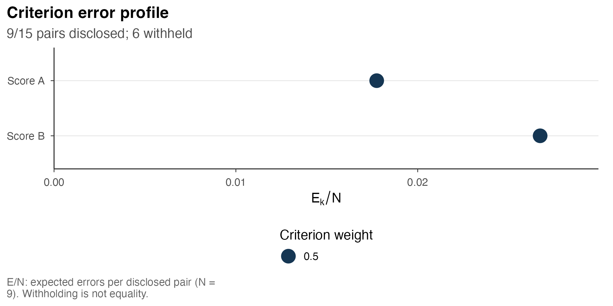
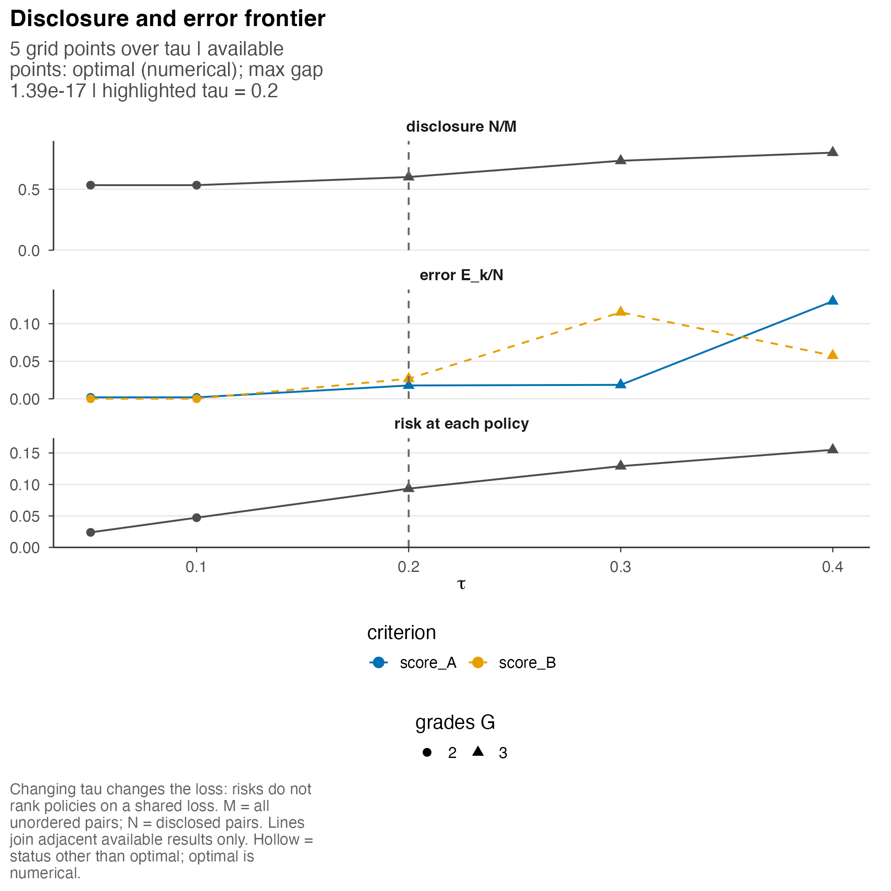
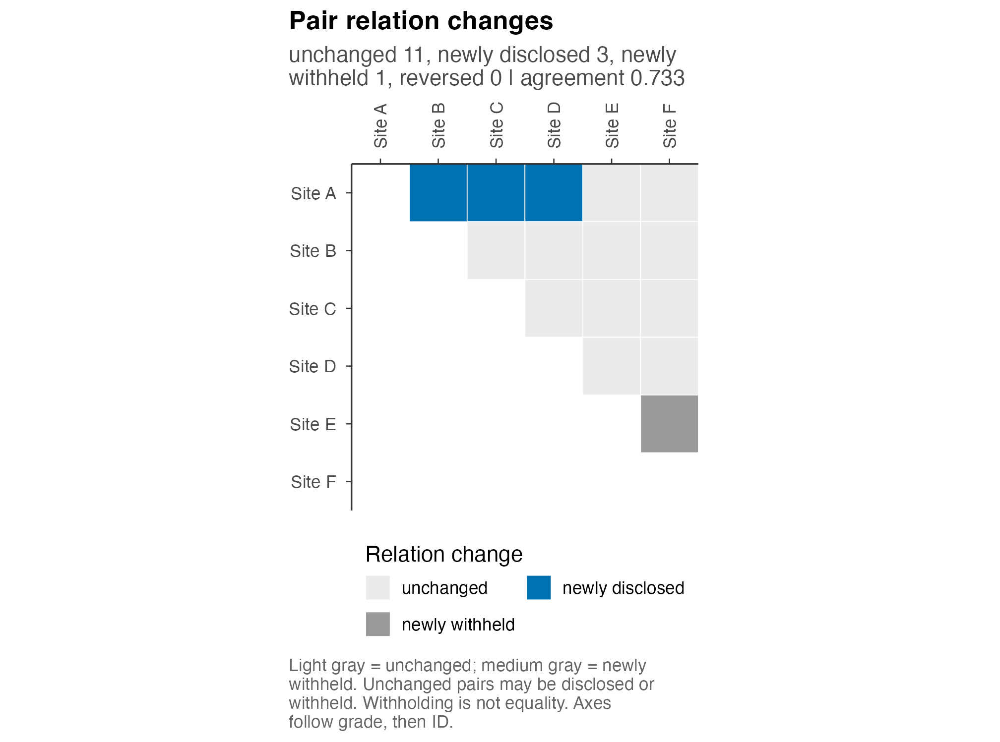
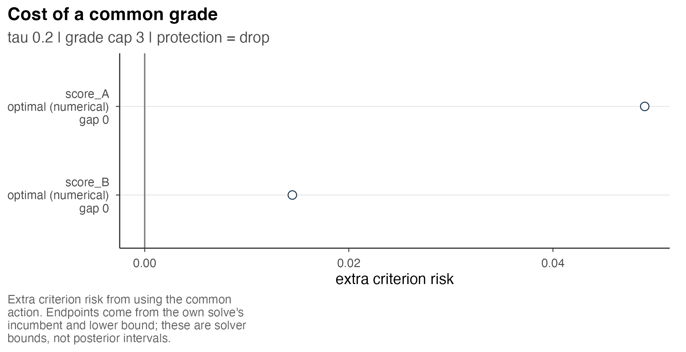

Figures and sensitivity to reporting settings
Source:vignettes/a7-figures-sensitivity.Rmd
a7-figures-sensitivity.RmdPlots in postrank separate posterior uncertainty in
entity scores from the ordering decisions made by a grading. Sensitivity
functions then show how the chosen grading changes when you vary the
unordered-pair cost tau, the grade cap G_max,
or the criterion weights while holding the posterior
fixed.
We continue with the six synthetic tutorial sites
(pr_tutorial) from Getting started: grading with one or two
criteria. Each site has independent normal posteriors with standard
deviation 0.2 on score_A and
score_B; larger values mean higher priority and grade 1 is
the highest priority. The reference two-criterion grading
(two) uses equal weights (0.5 and
0.5), G_max = 3, and tau = 0.2,
grouping A through D in grade 1,
E in grade 2, and F in grade 3. All stored
analyses and settings sweeps below are loaded visibly with
postrank_example(), and solver calls are shown with
eval = FALSE.
Choosing among the seven common-grade plots
All seven plotting functions take stored postrank
objects and return ggplot objects without running a
solver:
| Question | Function and what it plots |
|---|---|
| Where do entity scores and intervals sit within each grade? |
postrank_plot_report_card(): posterior
means, equal-tail marginal intervals, and assigned grades. |
| Which pairs are ordered and which are left unordered? |
postrank_plot_relations(): pair ordering
decisions for one grading, or pairwise changes between two
gradings. |
| What is the posterior probability of ordering a pair the wrong way? |
postrank_plot_pairwise():
directional-error probabilities e[i, j, k] if row
i is placed above column j. |
| How do expected errors differ across criteria? |
postrank_plot_profile(): expected errors
per ordered pair (E_over_N), per all pairs
(E_over_M), or criterion risk. |
How do the share of ordered pairs, error rates, and
loss change across tau? |
postrank_plot_frontier(): the ordered-pair
fraction N / M, E_over_N, and
risk across a grid of tau values. |
| How do candidate gradings compare under one loss? |
postrank_plot_compare(): risk, ordered
pairs, or pairwise changes across alternative gradings. |
| How much criterion loss does sharing one common grading add? |
postrank_plot_commonality(): extra
criterion loss relative to each criterion’s own optimized grading. |
Report cards and pairwise heatmaps display posterior quantities,
whereas relation maps display the chosen grading decisions; a pale cell
in postrank_plot_pairwise() can strongly favor one
direction even when the grading leaves that pair unordered under
G_max. See Grading
California schools on chronic absence for an example on real school
counts.
On larger entity sets, control which entities appear with
entities and max_rows (in
postrank_plot_report_card()) or max_entities
(in postrank_plot_pairwise()). Pass named
entity_labels and criterion_labels vectors to
display readable names without altering underlying IDs, and set
ncol = 1 to stack criterion panels vertically. Plotting a
subset of entities only filters the display; it never refits or
re-optimizes on that subset.
Criterion error rates and denominators
library(postrank)
sites <- pr_tutorial
one <- postrank_example("tutorial_one")
two <- postrank_example("tutorial_two")
entity_labels <- setNames(sites$units$label, sites$units$entity_id)
criterion_labels <- c(score_A = "Score A", score_B = "Score B")The reference two-criterion grading orders N = 9 of the
M = 15 site pairs and leaves 6 pairs
unordered. By default (show = "E_over_N"),
postrank_plot_profile() divides each criterion’s expected
wrong-direction count E by that shared count of
9 ordered pairs:
profile_plot <- postrank_plot_profile(two, show = "E_over_N",
criterion_labels = criterion_labels)
profile_plot
Open full-size figurePosterior expected wrong-direction errors per ordered pair (E/N) on Score A and Score B for the reference two-criterion grading, with point size proportional to criterion weight.
profile_data <- postrank_plot_data(two, "profile")
profile_data[, c("criterion", "weight", "E", "E_over_N", "E_over_M", "risk")]
#> criterion weight E E_over_N E_over_M risk
#> 1 score_A 0.5 0.1596996 0.01774440 0.01064664 0.09064664
#> 2 score_B 0.5 0.2405960 0.02673289 0.01603973 0.09603973Expected wrong-direction errors per ordered pair are
1.77% (0.0177) on score_A and
2.67% (0.0267) on score_B.
Setting show = "E_over_M" divides E by all
M = 15 pairs instead (1.06% and
1.60%), while show = "risk" adds the
unordered-pair cost tau * (M - N) / M (0.0906
and 0.0960). All three quantities are posterior
expectations rather than counts of observed mistakes.
If a grading leaves all pairs unordered (N = 0),
E_over_N is NA and
postrank_plot_profile() omits the point with a note;
similarly, missing or unvalidated grid points leave gaps along
postrank_plot_frontier() lines. Read an omitted point from
the object’s status and N rather than treating an empty
panel as zero error.
Varying tau, G_max, and
weights
postrank_settings_grid() builds a grid of policy
settings around a reference analysis while keeping the posterior fixed:
changing tau alters the cost of leaving pairs unordered,
changing weights alters how criterion errors are weighted
in the loss, and changing G_max alters how many distinct
grades are allowed. By default, postrank_settings_grid()
varies one axis at a time around the reference settings (7
settings here rather than a full factorial cross-product):
grid <- postrank_settings_grid(two$settings,
tau = c(0.1, 0.3), G_max = c(2L, 4L),
weights = list(
A_heavy = c(score_A = 0.8, score_B = 0.2),
B_heavy = c(score_A = 0.2, score_B = 0.8)
))Recomputing a sweep requires a solver (Gurobi is the default and
needs a license; backend = "highs" uses the open-source
highs package from install.packages("highs")).
The solver call is shown with eval = FALSE, and the stored
result is loaded with postrank_example():
sensitivity <- postrank_sensitivity(two, grid, backend = "highs",
control = postrank_control(time_limit = 60, threads = 1, seed = 1304))
sensitivity <- postrank_example("tutorial_sensitivity")
sg <- sensitivity$grid
st <- sensitivity$table
knitr::kable(data.frame(
Setting = sg$label, tau = sg$tau, Cap = sg$G_max,
`Weights A/B` = paste0(sg$w_score_A, "/", sg$w_score_B),
Grades = st$G, Ordered = st$N,
`A E/N` = round(st$E_over_N_score_A, 4),
`B E/N` = round(st$E_over_N_score_B, 4),
check.names = FALSE
), row.names = FALSE)| Setting | tau | Cap | Weights A/B | Grades | Ordered | A E/N | B E/N |
|---|---|---|---|---|---|---|---|
| reference | 0.2 | 3 | 0.5/0.5 | 3 | 9 | 0.0177 | 0.0267 |
| tau=0.10 | 0.1 | 3 | 0.5/0.5 | 2 | 8 | 0.0019 | 0.0001 |
| tau=0.30 | 0.3 | 3 | 0.5/0.5 | 3 | 11 | 0.0186 | 0.1152 |
| G_max=2 | 0.2 | 2 | 0.5/0.5 | 2 | 8 | 0.0019 | 0.0001 |
| G_max=4 | 0.2 | 4 | 0.5/0.5 | 3 | 9 | 0.0177 | 0.0267 |
| A_heavy | 0.2 | 3 | 0.8/0.2 | 3 | 12 | 0.0021 | 0.2371 |
| B_heavy | 0.2 | 3 | 0.2/0.8 | 2 | 8 | 0.0019 | 0.0001 |
Giving 0.8 weight to score_A
(A_heavy, row 6) lowers expected errors per ordered pair on
score_A to 0.0021 (0.21%) while
raising score_B’s rate to 0.2371
(23.71%) across 12 ordered pairs. Raising the
grade cap from 3 to 4 (G_max=4,
row 5) leaves the grading unchanged (3 occupied grades,
9 ordered pairs, 0 changed pair relations),
because allowing an extra grade does not force the solver to use it.
All 7 rows finished with status "optimal"
and maximum optimization gap 1.39e-17
(max(st$risk_absolute_gap)), with two rows recording small
floating-point lower-bound clamping within solver tolerance. Those gaps
and warnings describe the optimization over the supplied probabilities;
they are not posterior intervals or guarantees about the score
model.
Following the unordered-pair cost frontier
postrank_frontier() holds weights and
G_max fixed while varying the unordered-pair
(“withholding”) cost tau across a grid:
frontier <- postrank_frontier(two, tau = c(0.05, 0.1, 0.2, 0.3, 0.4),
backend = "highs",
control = postrank_control(time_limit = 60, threads = 1, seed = 1304))
frontier <- postrank_example("tutorial_frontier")
frontier_plot <- postrank_plot_frontier(frontier, highlight = 0.2)
frontier_plot
Open full-size figureAcross five values of tau, the ordered-pair fraction (N/M) rises from 0.533 to 0.800. The other panels show expected errors per ordered pair on each criterion and overall loss. A dashed vertical line marks the reference setting of 0.20.
Along tau = 0.05, 0.10, 0.20, 0.30, 0.40, the report
orders 8, 8, 9, 11, 12 of the 15 pairs. The first panel
shows the fraction N / M, which rises from
8/15 (0.533) to 12/15 (0.800). Higher values
of tau penalize unordered pairs more heavily and never
reduce the exact optimal count of ordered pairs when the posterior,
weights, and allowed grade family stay fixed. By contrast, per-criterion
error rates (E / N) need not move monotonically: on
score_B, E / N rises from 0.0267
at tau = 0.20 to 0.1152 at
tau = 0.30 and then drops to 0.0575 at
tau = 0.40 as the grade boundaries shift. Each point in the
loss panel evaluates a different value of tau, and the
connecting line segments aid visual reading rather than defining
intermediate gradings between grid points.
Even when N grows with tau, the ordered
pairs at a larger tau need not contain every pair ordered
at a smaller tau. Moving from tau = 0.20 to
tau = 0.30 (tau=0.30, row 3) newly orders
3 pairs (n_new_disclosed) and newly leaves
1 previously ordered pair unordered
(n_new_withheld), for a net gain of 2 ordered
pairs:
hi_row <- which(sg$tau == 0.3)
sensitivity$changes[hi_row, c("n_same", "n_new_disclosed", "n_new_withheld", "n_reversed")]
#> n_same n_new_disclosed n_new_withheld n_reversed
#> 3 11 3 1 0
postrank_plot_relations(two, sensitivity$fits[[hi_row]],
entity_labels = entity_labels)
Open full-size figurePairwise ordering changes between the reference grading (tau = 0.20) and the higher-cost grading (tau = 0.30) across the six sites.
Comparing candidate gradings under one common loss
To compare candidate gradings fairly, evaluate all of them on the
same posterior input, weights, and tau with
postrank_compare(). Below we evaluate the one-criterion
score_A grading (get_grades(one)) and an
all-unordered one-grade vector alongside the two-criterion common
grading:
comparison <- postrank_compare(two,
`Score A grades` = get_grades(one),
`Withhold all` = setNames(rep(1L, nrow(sites$units)), sites$units$entity_id),
baselines = character())
knitr::kable(comparison$table[, c("method", "N", "G", "risk", "family_feasible")],
digits = 4, row.names = FALSE,
col.names = c("Grading", "Ordered pairs", "Grades", "Two-criterion loss", "Within G_max"))| Grading | Ordered pairs | Grades | Two-criterion loss | Within G_max |
|---|---|---|---|---|
| joint | 9 | 3 | 0.0933 | TRUE |
| Score A grades | 12 | 3 | 0.1356 | TRUE |
| Withhold all | 0 | 1 | 0.2000 | TRUE |
On the two-criterion equal-weight loss at tau = 0.20,
the score_A grading orders 12 pairs with loss
0.1356, compared with 0.0933 for the common
grading (joint, 9 ordered pairs) and
0.2000 for leaving all pairs unordered.
postrank_compare() evaluates supplied grade vectors without
re-optimizing them (setting baselines = character() omits
the default expected_rank and composite
baseline cuts so only the supplied gradings are compared against
joint), and postrank_plot_compare(comparison)
plots either the summary panels of loss, disclosure, and grade count
(view = "summary") or the counts of pairwise ordering
differences from joint (view = "relations"),
marking any candidate that violates G_max,
exact_G, or q via family_feasible
and feasibility_reason (see Combining several criteria in one common
grading for a 30-site baseline comparison).
Criterion-specific cost of sharing one common grading
postrank_commonality_cost() optimizes each criterion on
its own at the same tau and G_max and
subtracts that single-criterion loss from the criterion’s loss under the
shared common grading:
commonality <- postrank_commonality_cost(two, backend = "highs",
control = postrank_control(time_limit = 60, threads = 1, seed = 1304))
commonality <- postrank_example("tutorial_commonality")
commonality$table[, c("criterion_id", "common_grade_risk", "own_best_risk",
"cost_lower", "cost_upper")]
#> criterion_id common_grade_risk own_best_risk cost_lower cost_upper
#> 1 score_A 0.09064664 0.04165164 0.04899500 0.04899500
#> 2 score_B 0.09603973 0.08157121 0.01446853 0.01446853
postrank_plot_commonality(commonality)
Open full-size figureExtra criterion loss under the shared two-criterion grading relative to each criterion’s own optimized grading at tau = 0.20 and G_max = 3.
Sharing one common grading adds 0.0490 expected loss on
score_A (0.0906 versus 0.0417 on
its own) and 0.0145 on score_B
(0.0960 versus 0.0816). In
postrank_plot_commonality(), each bar spans
[cost_lower, cost_upper], where cost_lower
subtracts the criterion’s best checked loss and cost_upper
subtracts the solver’s lower bound for that single-criterion problem.
Because both single-criterion solves closed their optimization gap to
zero here, the two endpoints coincide; when a single-criterion solve
stops early with a nonzero solver gap, the bar width reflects
optimization uncertainty rather than posterior score uncertainty.
The same stored commonality and tau-frontier tables are
also available on the 32-draw, three-entity example
postrank_toy:
postrank_example("toy_commonality")[["table"]][
, c("criterion_id", "common_grade_risk", "own_best_risk", "cost_lower")]
#> criterion_id common_grade_risk own_best_risk cost_lower
#> 1 need_A 0.1041667 0.1041667 0.0000000
#> 2 need_B 0.3750000 0.1041667 0.2708333
toy_frontier <- postrank_example("toy_frontier")
toy_frontier[["table"]][, c("tau", "status", "N", "disclosure_rate",
"E_over_N_need_A", "E_over_N_need_B")]
#> tau status N disclosure_rate E_over_N_need_A E_over_N_need_B
#> 1 0.15 optimal 0 0.0000000 NA NA
#> 2 0.25 optimal 2 0.6666667 0.03125 0.4375
#> 3 0.40 optimal 2 0.6666667 0.03125 0.4375Note the difference between tau and q grids
in postrank_frontier(): changing tau changes
the loss function itself (so rows at different tau values
are not ranked by their risk values), whereas varying a
criterion error budget q changes the feasible family under
a fixed loss (and postrank_plot_frontier() keeps distinct
tau values in separate panel columns when q
varies).
Extracting plot data and saving figures
postrank_plot_data() returns the tidy data frame behind
any of the seven plot types, and ggplot2::ggsave() writes
PNG or SVG files at explicit print dimensions:
figure_dir <- tempfile("postrank-figures-")
dir.create(figure_dir)
ggplot2::ggsave(file.path(figure_dir, "criterion-profile.png"),
profile_plot, width = 7, height = 3.5, units = "in", dpi = 300)
if (requireNamespace("svglite", quietly = TRUE)) {
ggplot2::ggsave(file.path(figure_dir, "criterion-profile.svg"),
profile_plot, device = svglite::svglite,
width = 7, height = 3.5, units = "in")
}Write publication figures to a project folder rather than
tempfile(), check text legibility at final print size, and
archive the postrank_analysis RDS alongside exported
figures as shown in Reading
and exporting grading results.
Where next
- For a side-by-side visual tour of all seven figure functions, see Gallery of the seven common-grade figures.
- For the mathematical details of policy settings, action families, and common-grade burdens, see Computing grades, choosing settings, and reading solver bounds and Combining several criteria in one common grading.